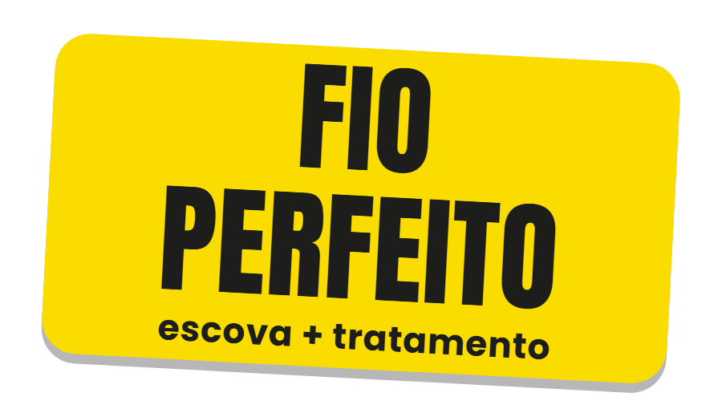
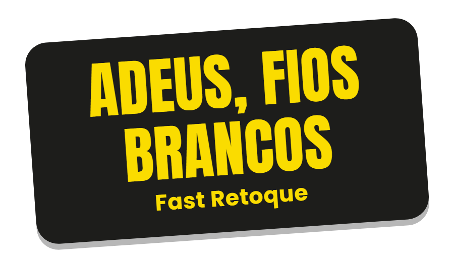
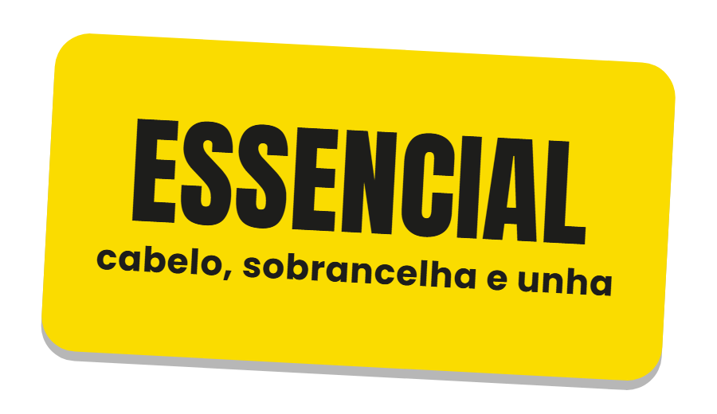
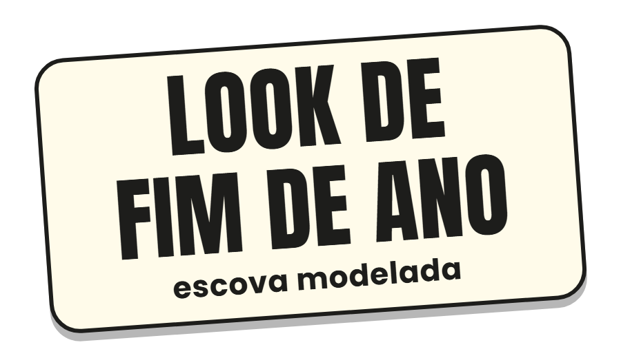
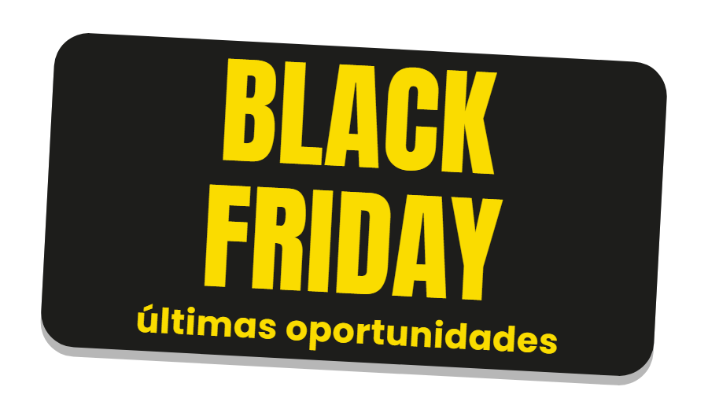
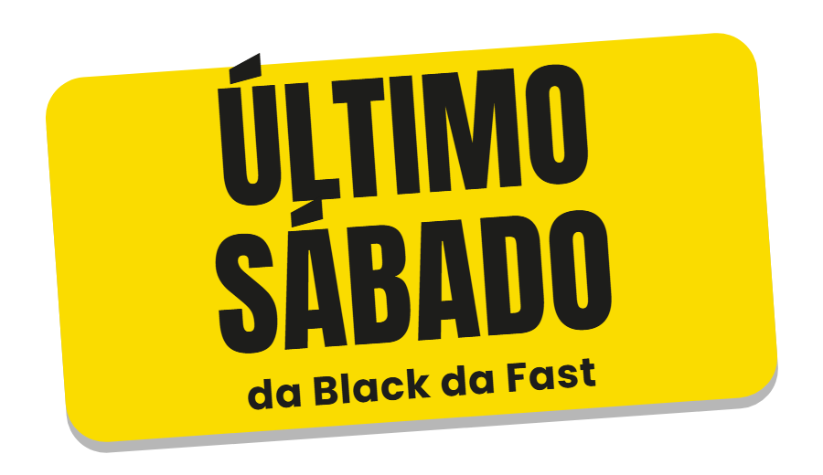
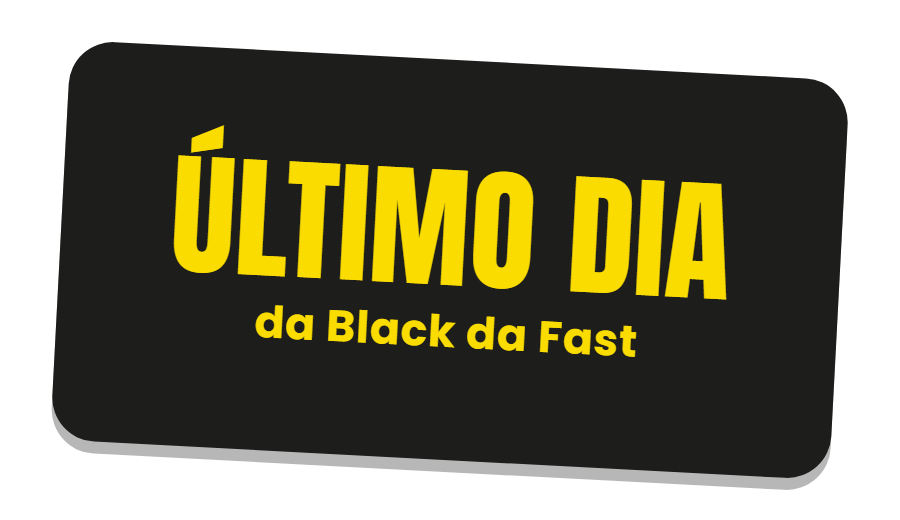

Todo dia, 4 stories. Grava direto no Instagram, do jeito que está acontecendo, sem edição. Abre o dia, copia a frase, baixa a figurinha e posta.
Toque no dia pra abrir. Os 4 quadros já vêm com o que gravar e a frase pronta pra copiar.
Grava A porta abrindo, as cadeiras prontas e a make sendo organizada (pincéis, paleta).
Escreve “Bom dia! Sábado de festa na Fast 💛”
Caixinha Qual é o seu evento do fim de semana?
Rodando hoje: Reels da Fernanda (Make VIP para as festas)
Grava Close do olhar com a make sendo feita (sombra e cílios). Sem falar nada.
Escreve “Make VIP que segura a noite toda.”
Qual procedimento está sendo feito agora? Escolha e aparece o passo a passo.
Grava Cliente pronta saindo, rosto inteiro (peça o ok dela).
Escreve “Pronta pra festa. É só chegar, sem hora marcada.”
Enquete Make ou escova pra hoje?
MakeEscovaOs dois 💛
A loja fecha aos domingos. Hoje não tem story (nem feed). Descanso! 💛

Grava Cadeiras vazias e luz da manhã, ou a primeira cliente chegando.
Escreve “Bom dia! Começou a semana. Cabelo em dia? 💛”
Caixinha Como está o seu cabelo hoje? (seco, oleoso, com frizz...)
Rodando hoje: Plano da segunda + os 3 combos da Black
Grava Hidratação sendo espalhada mecha por mecha e depois a escova. Sem falar nada.
Escreve “Segunda de Fio Perfeito: escova + tratamento.”
Qual procedimento está sendo feito agora? Escolha e aparece o passo a passo.
Grava Cabelo balançando, rosto inteiro.
Escreve “Brilho de quem cuidou.”
Enquete Seu cabelo pede hidratação ou nutrição?
HidrataçãoNutriçãoNão sei

Grava Bancada de unhas arrumada e esmaltes à mostra.
Escreve “Bom dia! Terça é dia de unha e de fio branco no lugar.”
Caixinha Mão ou pé: o que você deixa pra depois?
Rodando hoje: Pés e Mãos R$ 65 + Fast Retoque
Grava Close na unha com esmaltação bem feita e a cutícula pronta. Só a unha, não a mão inteira.
Escreve “Mão e pé no mesmo dia.”
Qual procedimento está sendo feito agora? Escolha e aparece o passo a passo.
Grava Antes e depois da raiz, na risca do cabelo.
Escreve “A raiz do jeitinho que você queria.”
Enquete Mito ou verdade: dá pra retocar só a raiz?
MitoVerdade

Grava A loja se enchendo: cadeiras, secadores, movimento.
Escreve “Bom dia! Hoje tem Essencial: cabelo, sobrancelha e unha.”
Caixinha Qual dos três você nunca deixa de fazer?
Rodando hoje: Essencial + Pés e Mãos + os 3 combos da Black
Grava Três cortes rápidos: escova, design de sobrancelhas e manicure acontecendo.
Escreve “Três cuidados, uma visita só.”
Qual procedimento está sendo feito agora? Escolha e aparece o passo a passo.
Grava Bastidor da criadora gravando (se vier) ou o resultado de uma cliente do Essencial.
Escreve “Tudo no mesmo dia, sem hora marcada.”
Enquete Qual você faz primeiro?
CabeloSobrancelhaUnha

Grava Uma mecha sendo enrolada na escova, em close, logo cedo.
Escreve “Bom dia! Fim de ano chegando: qual vai ser o seu look?”
Caixinha Liso, ondas ou cachos?
Rodando hoje: Escova modelada + os 3 combos da Black
Grava A escova modelada sendo feita: a mecha enrolando e soltando.
Escreve “Cada mecha com movimento.”
Qual procedimento está sendo feito agora? Escolha e aparece o passo a passo.
Grava Ondas em movimento, rosto inteiro.
Escreve “Pronta pra qualquer evento.”
Enquete Qual é o seu look de fim de ano?
LisoOndasCachos

Grava A loja por dentro, com movimento, e o cartaz dos combos se tiver.
Escreve “Bom dia! Hoje é Black Friday na Fast 💛”
Caixinha Elite Hair, Glow Up ou Unhas Gold: qual é a sua?
Rodando hoje: Black dos 3 combos (Elite Hair, Glow Up e Unhas Gold, até 30/11)
Grava Cartaz ou arte dos combos + clientes sendo atendidas ao fundo.
Escreve “Últimas oportunidades dos 3 combos da Black.”
Qual procedimento está sendo feito agora? Escolha e aparece o passo a passo.
Grava Cliente saindo satisfeita (rosto inteiro, com ok).
Escreve “Os combos valem até 30/11. É só chegar.”
Enquete Já garantiu o seu?
Já! 💛Vou garantir

Grava Sábado de loja cheia: secadores ligados, cadeiras ocupadas.
Escreve “Bom dia! Último sábado da Black.”
Caixinha Cabelo, unha ou make: o que você vai fazer hoje?
Rodando hoje: Reels da Fernanda + os 3 combos até 30/11
Grava Se a Fernanda estiver gravando, mostre o bastidor. Senão, escova lisa no close.
Escreve “Os 3 combos valem até segunda.”
Qual procedimento está sendo feito agora? Escolha e aparece o passo a passo.
Grava Resultado de uma cliente (rosto inteiro).
Escreve “Sábado bom é sábado de se cuidar.”
Enquete Sábado de salão ou de sofá?
SalãoSofá
A loja fecha aos domingos. Hoje não tem story (nem feed). Descanso! 💛

Grava A loja abrindo no último dia do mês.
Escreve “Bom dia! Último dia de novembro 💛”
Caixinha O que você quer cuidar pra fechar o mês?
Rodando hoje: Fio Perfeito + último dia dos 3 combos da Black
Grava A reconstrução sendo aplicada e a escova depois. Sem falar nada.
Escreve “Segunda de Fio Perfeito: escova + reconstrução.”
Qual procedimento está sendo feito agora? Escolha e aparece o passo a passo.
Grava Resultado do cabelo, de frente e de costas (rosto inteiro).
Escreve “Último dia dos 3 combos da Black.”
Enquete Mega Hair: você já fez?
JáQuero saber mais
Escreva o que você vai fazer (ex.: hidratação, unha, make) e saem 4 ideias prontas.
O que a cliente quer ouvir: Cabelo liso, alinhado e com brilho. Sem hora marcada.
Grava Close da escova passando na mecha e o cabelo caindo liso.
Escreve “Liso do jeito que você gosta.”
Uma palavra na tela em cada quadro. Sem falar, só mostrar.
Grava Cliente de frente, cabelo liso balançando.
Escreve “Liso, alinhado e com brilho.”
Liso todo dia ou só em dia de festa?
Todo diaSó em festa
O que a cliente quer ouvir: Ondas e volume com cara de evento.
Grava Close da mecha enrolando na escova.
Escreve “Cada mecha com movimento.”
Uma palavra na tela em cada quadro. Sem falar, só mostrar.
Grava Cliente virando o cabelo, rosto inteiro.
Escreve “Pronta pra qualquer evento.”
Ondas ou cachos no fim de ano?
OndasCachosLiso
O que a cliente quer ouvir: Escova no cabelo com Mega Hair, do começo ao fim do comprimento.
Grava Close da escova deslizando pelo comprimento.
Escreve “Liso até as pontas.”
Uma palavra na tela em cada quadro. Sem falar, só mostrar.
Grava Cabelo comprido de costas, sem cortar a pessoa.
Escreve “Liso do começo ao fim.”
Você já fez Mega Hair?
JáQuero saber mais
O que a cliente quer ouvir: Ondas e volume também no cabelo com Mega Hair.
Grava Close da mecha enrolando no comprimento do Mega Hair.
Escreve “Ondas até as pontas.”
Uma palavra na tela em cada quadro. Sem falar, só mostrar.
Grava Cabelo de costas com as ondas, sem cortar a pessoa.
Escreve “Volume e movimento.”
Mega Hair liso ou modelado?
LisoModelado
O que a cliente quer ouvir: Escova com finalização no babyliss ou na chapinha.
Grava Close do babyliss ou da chapinha na mecha.
Escreve “A finalização que faz a diferença.”
Uma palavra na tela em cada quadro. Sem falar, só mostrar.
Grava Cabelo finalizado, de lado.
Escreve “Acabamento de salão.”
Babyliss ou chapinha?
BabylissChapinha
O que a cliente quer ouvir: Finalização no babyliss.
Grava Close do babyliss enrolando a mecha.
Escreve “Ondinhas feitas na hora.”
Uma palavra na tela em cada quadro. Sem falar, só mostrar.
Grava Ondas prontas, rosto inteiro.
Escreve “Ondas de salão.”
Onda solta ou onda definida?
SoltaDefinida
O que a cliente quer ouvir: Finalização na chapinha.
Grava Close da chapinha descendo pela mecha.
Escreve “Alinhado até a ponta.”
Uma palavra na tela em cada quadro. Sem falar, só mostrar.
Grava Cabelo liso, rosto inteiro.
Escreve “Liso e alinhado.”
Chapinha toda semana?
TodaSó às vezes
O que a cliente quer ouvir: Secagem com difusor para realçar ondas e cachos.
Grava Close do difusor no cacho.
Escreve “Cachos que ficam do jeito que são.”
Uma palavra na tela em cada quadro. Sem falar, só mostrar.
Grava Cachos prontos, rosto inteiro.
Escreve “Cacho com volume e forma.”
Você ama seus cachos?
Amo 💛Estou aprendendo
O que a cliente quer ouvir: Lavagem no lavatório, com massagem.
Grava Água caindo no cabelo e a mão massageando.
Escreve “Só a lavagem já relaxa.”
Uma palavra na tela em cada quadro. Sem falar, só mostrar.
Grava Cliente relaxada, rosto inteiro, com ok.
Escreve “Hora de relaxar.”
O lavatório é a melhor parte?
Melhor parte!Prefiro a escova
O que a cliente quer ouvir: Cuidado nas pontas.
Grava Close das pontas, antes.
Escreve “Pontas pedindo carinho?”
Uma palavra na tela em cada quadro. Sem falar, só mostrar.
Grava Antes e depois das pontas.
Escreve “Pontas com outro aspecto.”
As suas pontas estão pedindo o quê?
HidrataçãoNutriçãoNão sei
O que a cliente quer ouvir: Linha Fresh Mint, pensada para cabelo oleoso.
Grava Close do produto Fresh Mint na mão da profissional.
Escreve “Pra quem tem cabelo oleoso.”
Uma palavra na tela em cada quadro. Sem falar, só mostrar.
Grava Cabelo pronto, rosto inteiro.
Escreve “Cabelo pronto, raiz com ótimo aspecto.”
A sua raiz fica oleosa?
SimNãoDepende do dia
O que a cliente quer ouvir: Aplicação de produto no cabelo durante o serviço.
Grava Close do produto sendo aplicado.
Escreve “Um passo a mais pro seu cabelo.”
Uma palavra na tela em cada quadro. Sem falar, só mostrar.
Grava Cabelo pronto.
Escreve “Cuidado extra no mesmo dia.”
Você pede um extra no seu cabelo?
SempreÀs vezesNunca
O que a cliente quer ouvir: Colore só os fios brancos da raiz, de 3 a 20 minutos, resultado natural. O resto da cor fica como está. Exclusivo da rede.
Grava Close da risca com o fio branco e a mão aplicando só na raiz.
Escreve “Só a raiz. O resto da cor fica.”
Uma palavra na tela em cada quadro. Sem falar, só mostrar.
Grava Antes e depois da risca do cabelo.
Escreve “Sem pintar o cabelo todo.”
Mito ou verdade: dá pra retocar só a raiz?
MitoVerdade
⚠️ A resposta é Verdade.
O que a cliente quer ouvir: Make para o dia a dia.
Grava Close do pincel no rosto.
Escreve “Make leve pro dia.”
Uma palavra na tela em cada quadro. Sem falar, só mostrar.
Grava Cliente pronta, rosto inteiro.
Escreve “Pronta, sem hora marcada.”
Make leve ou make marcante?
LeveMarcante
O que a cliente quer ouvir: Make que segura do fim da tarde até a noite.
Grava Close do olhar: sombra e cílios.
Escreve “Make que segura a noite toda.”
Uma palavra na tela em cada quadro. Sem falar, só mostrar.
Grava Cliente pronta, rosto inteiro, com ok.
Escreve “Make VIP: do fim da tarde até a noite.”
Qual é o seu evento?
FestaCasamentoFormatura
O que a cliente quer ouvir: Cílios que completam o olhar nas fotos. É adicional da make, não é extensão de cílios.
Grava Close do cílio sendo aplicado.
Escreve “O olhar completo.”
Uma palavra na tela em cada quadro. Sem falar, só mostrar.
Grava Antes e depois do olhar.
Escreve “Pra completar o olhar.”
Com ou sem cílios?
ComSem
⚠️ Nunca chamar de extensão.
O que a cliente quer ouvir: Encontra o formato que combina com o seu rosto, não o que está na moda.
Grava Close do desenho da sobrancelha sendo feito.
Escreve “O formato certo pro seu rosto.”
Uma palavra na tela em cada quadro. Sem falar, só mostrar.
Grava Antes e depois do olhar.
Escreve “Rosto arrumado, mesmo sem make.”
Sobrancelha fina ou cheia?
FinaCheia
O que a cliente quer ouvir: Preenche as falhas e mantém o desenho por cerca de 15 dias.
Grava Close da henna sendo aplicada.
Escreve “Preenche as falhas.”
Uma palavra na tela em cada quadro. Sem falar, só mostrar.
Grava Antes e depois da sobrancelha.
Escreve “O desenho dura cerca de 15 dias.”
Henna ou lápis?
HennaLápis
O que a cliente quer ouvir: Contorno limpo no mesmo atendimento do design.
Grava Close do contorno do buço, antes e depois, só se a cliente permitir.
Escreve “Contorno limpo, sem complicação.”
Uma palavra na tela em cada quadro. Sem falar, só mostrar.
Grava O depois, discreto.
Escreve “Mais um cuidado no mesmo dia.”
Buço: em casa ou no salão?
Em casaNo salão
O que a cliente quer ouvir: Cuidado com os pelinhos do rosto.
Grava Close discreto do rosto, sem expor a cliente.
Escreve “Rosto limpinho.”
Uma palavra na tela em cada quadro. Sem falar, só mostrar.
Grava O depois, discreto.
Escreve “Mais cuidado no mesmo dia.”
Você faz a epilação do rosto?
FaçoQuero fazer
O que a cliente quer ouvir: Penteado pra evento, sem hora marcada.
Grava Close do penteado sendo fixado.
Escreve “Cada detalhe no lugar.”
Uma palavra na tela em cada quadro. Sem falar, só mostrar.
Grava Penteado de costas e de lado, sem cortar a pessoa.
Escreve “Pronta pro evento.”
Preso ou solto na festa?
PresoSolto
O que a cliente quer ouvir: Tranças feitas na hora.
Grava Close das mãos trançando.
Escreve “Trança feita com carinho.”
Uma palavra na tela em cada quadro. Sem falar, só mostrar.
Grava Trança de costas, sem cortar a pessoa.
Escreve “Trança pronta.”
Trança lateral ou solta?
LateralSolta
O que a cliente quer ouvir: Devolve maciez, brilho e aquele aspecto saudável.
Grava Close da máscara sendo espalhada, mecha por mecha.
Escreve “Brilho e maciez de volta.”
Uma palavra na tela em cada quadro. Sem falar, só mostrar.
Grava Cabelo balançando, rosto inteiro.
Escreve “Maciez que dá pra ver.”
O seu cabelo está sem brilho?
SimNãoÀs vezes
⚠️ Produto: Fast Mask (hidratação).
O que a cliente quer ouvir: Controla o frizz, reduz o ressecamento e deixa os fios mais alinhados.
Grava Close do frizz antes e do fio alinhado depois.
Escreve “Frizz sob controle.”
Uma palavra na tela em cada quadro. Sem falar, só mostrar.
Grava Antes e depois do frizz.
Escreve “Fios mais alinhados.”
O seu cabelo vive armado?
ViveÀs vezesNunca
⚠️ Produto: Fast Nutrição.
O que a cliente quer ouvir: Umectação com óleo nutritivo.
Grava Close do óleo sendo aplicado na mecha.
Escreve “Óleo nutritivo nos fios.”
Uma palavra na tela em cada quadro. Sem falar, só mostrar.
Grava Cabelo com brilho, rosto inteiro.
Escreve “Cuidado que dá pra ver.”
Você já fez umectação?
JáNunca
O que a cliente quer ouvir: Tecnologia de LED no cuidado do cabelo.
Grava Close do equipamento de LED ligado.
Escreve “Tecnologia que a Fast tem.”
Uma palavra na tela em cada quadro. Sem falar, só mostrar.
Grava A cliente tranquila, rosto inteiro.
Escreve “Mais um cuidado pro seu cabelo.”
Você já fez LED no cabelo?
JáNuncaO que é?
O que a cliente quer ouvir: Reconstrução para o cabelo com Mega Hair.
Grava Close do tratamento no comprimento do Mega Hair.
Escreve “Cuidado também no Mega Hair.”
Uma palavra na tela em cada quadro. Sem falar, só mostrar.
Grava Cabelo comprido de costas, sem cortar a pessoa.
Escreve “Mega Hair cuidado.”
Você cuida do seu Mega Hair?
CuidoPreciso cuidar
O que a cliente quer ouvir: Vapor de ozônio que higieniza o couro cabeludo. Com ele limpo, a escova fica mais leve e dura mais.
Grava Close do vapor de ozônio sobre o cabelo.
Escreve “Vapor de ozônio no couro cabeludo.”
Uma palavra na tela em cada quadro. Sem falar, só mostrar.
Grava A escova depois, balançando.
Escreve “Escova mais leve e que dura mais.”
Quantos dias a sua escova dura?
1 dia2 dias3 ou mais
O que a cliente quer ouvir: Esmalte bem feito: sem sair da linha, com brilho.
Grava Close do esmalte na unha, sem sobra na pele.
Escreve “Sem sair da linha.”
Uma palavra na tela em cada quadro. Sem falar, só mostrar.
Grava Só as unhas prontas, em close.
Escreve “Esmalte perfeito.”
Qual é a cor de hoje?
VermelhoNudeRosa
O que a cliente quer ouvir: A clássica que combina com tudo.
Grava Close da pontinha branca sendo desenhada.
Escreve “A clássica que nunca sai de moda.”
Uma palavra na tela em cada quadro. Sem falar, só mostrar.
Grava Só as unhas, em close.
Escreve “Clássica e delicada.”
Francesinha ou cor?
FrancesinhaCor
O que a cliente quer ouvir: Unha bonita, esmaltação bem feita e cutícula pronta.
Grava Close na cutícula bem feita e no esmalte sem sobra.
Escreve “Cutícula pronta, esmalte perfeito.”
Uma palavra na tela em cada quadro. Sem falar, só mostrar.
Grava Só as unhas prontas, em close (não a mão inteira).
Escreve “Unha que dura e fica linda.”
Qual é a cor de hoje?
VermelhoNudeRosa
⚠️ Mostre unhas, não a mão inteira. Produto: Fast Cutículas.
O que a cliente quer ouvir: Pé macio e unhas feitas.
Grava Close da unha do pé sendo esmaltada.
Escreve “Pé feito, pé feliz.”
Uma palavra na tela em cada quadro. Sem falar, só mostrar.
Grava Só as unhas dos pés, em close.
Escreve “Pronta pra sandália.”
Você deixa o pé pra depois?
SempreNunca
O que a cliente quer ouvir: Mão e pé no mesmo dia, sem hora marcada.
Grava Duas bancadas lado a lado: mão de um lado, pé do outro.
Escreve “Mão e pé no mesmo dia.”
Uma palavra na tela em cada quadro. Sem falar, só mostrar.
Grava Unhas das mãos e dos pés prontas, em close.
Escreve “Tudo no mesmo dia.”
Mão ou pé: qual você faz primeiro?
MãoPé
O que a cliente quer ouvir: Tira a aspereza, cuida das rachaduras e hidrata bem fundo.
Grava Close do calcanhar antes e depois (com ok da cliente).
Escreve “Calcanhar macio de novo.”
Uma palavra na tela em cada quadro. Sem falar, só mostrar.
Grava Antes e depois do calcanhar.
Escreve “O pé volta macio.”
O seu calcanhar rachou no verão?
SimNão
O que a cliente quer ouvir: A versão VIP do cuidado: tira a aspereza, cuida das rachaduras e hidrata fundo.
Grava Close do tratamento no calcanhar.
Escreve “Cuidado que o pé sente.”
Uma palavra na tela em cada quadro. Sem falar, só mostrar.
Grava Antes e depois, em close.
Escreve “O pé volta macio.”
Você já fez Plástica dos Pés?
JáNunca
O que a cliente quer ouvir: Um momento de relaxamento para os pés.
Grava Close da vela acesa na bancada.
Escreve “Hora de desacelerar.”
Uma palavra na tela em cada quadro. Sem falar, só mostrar.
Grava A cliente relaxada, rosto inteiro.
Escreve “Um respiro no meio do dia.”
Você precisa desacelerar hoje?
MuitoUm pouco
O que a cliente quer ouvir: A profissional mostra o produto que usou e fala, com as palavras dela, para quem serve.
Grava A profissional segurando o produto e mostrando o rótulo.
Escreve “Esse aqui eu uso nesse atendimento.”
Uma palavra na tela em cada quadro. Sem falar, só mostrar.
Grava O resultado no cabelo ou na unha da cliente.
Escreve “Quem usa, sente a diferença.”
Quer que a gente mostre mais um produto?
QueroNão precisa
⚠️ Fale natural: 'Esse aqui eu gosto porque...' e termine com 1 benefício. O produto precisa estar à venda na loja.
Fundo transparente. Baixe e coloque por cima do vídeo ou da foto, como imagem da galeria. A do dia está dentro de cada dia.
Copie e cole no sticker do Instagram. Toda resposta vira conversa.
Toque pra ver como fica. Se a Chely gostar de alguma, ela pede o vídeo original à loja e leva pro feed.